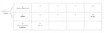

hey Product Blog のフィード
技術書典スポンサーうらばなし 23
23
hey Product Blog
みなさんこんにちは。モバイル本部のマネージャーをやっている @huin です。 去る 1月22日 (土) 〜 1月30日 (日) に技術書オンリーイベント 技術書典 12 が開催されました。 技術書典...
11日前
heyで長期インターンしてみた 1
hey Product Blog
この記事は 2021年11月からheyでAndroidエンジニアとして長期インターンを始めた大学4年生が、そのまま内定をもらうまでのお話です。 自己紹介 記事を書き始める前に、軽く自己紹介させて下さい...
11日前

STORES レジアプリチームの開発プラクティスを作成しました
1
hey Product Blog
はじめに STORES レジのiOSアプリ開発をしているたまねぎです。 この記事では、 STORES レジアプリチーム内で「チーム開発プラクティス」を作成したことの紹介をしています。 チーム開発プラク...
14日前

SecurityHubを利用したAWSサービスのSlack通知
hey Product Blog
こんにちは。hey セキュリティ本部の清水です。 hey ではAWS Organization を利用して複数の AWS アカウントをまとめて管理しています。AWS Organization と連携で...
21日前
QAエンジニアとテスターとは？STORES 決済 私たちQAチームの取り組み
hey Product Blog
はじめに QAエンジニアとテスター テクノロジー部門決済本部QAグループのめありです。 今回はQAチームの取り組みについてお話します。まずQAとはなんなのかは以前記事にさせていただいたのでぜひご覧くだ...
25日前
STORES 予約 リリースノート(β) 2021/12
hey Product Blog
概要 2021年12月分の STORES 予約 開発チームのリリースノート(β版) です。 半自動化しており、マージされたPull Requestタイトルを列挙しています。 (原則マージ毎にデプロイ/...
2ヶ月前
hey3ヶ月生による STORES 決済 モバイルアプリチームのご紹介！前編
hey Product Blog
heyに入社して3ヶ月になりました、iOSアプリエンジニア・ととです。 heyのモバイルアプリエンジニアってどんなことをしているのか、というお話を前編・後編に分けて書きます。 今回の記事では、わたしが...
2ヶ月前
hey3ヶ月生による STORES 決済 モバイルアプリチームのご紹介！後編
hey Product Blog
heyに入社して3ヶ月になりました、iOSアプリエンジニア・ととです。 heyのモバイルエンジニアってどんなことをしているのか、というお話を前編・後編に分けて書いています。 前編では、わたしが STO...
2ヶ月前
heyのセキュリティエンジニアはどんな仕事をしているの？
hey Product Blog
こんにちは。hey のセキュリティ本部に所属している清水です。この記事では、hey のセキュリティ本部がいまどんな仕事をしているのか、その内容を紹介していきたいと思います。hey のセキュリティエンジ...
3ヶ月前
freee 社のアクセシビリティガイドラインとチェックリストを丸ごと導入した
hey Product Blog
hey Advent Calendar 2021 及び アクセシビリティ Advent Calendar 2021 の 24日目です。 業務委託で STORES の開発をしている @inouetaku...
3ヶ月前
業務の中で出会った default gem のアップグレードによる CVE 対応と rubygems 3.2.0 未満の不具合の話
hey Product Blog
こんにちは！ CTO 室所属エンジニアの id:hogelog です。 もういくつ寝るとクリスマスというわけで毎年クリスマスのお楽しみ、新バージョンの Ruby がリリースされます。次バージョンの R...
3ヶ月前
STORES 決済 Androidアプリの設計改善の歴史
hey Product Blog
この記事はhey Advent Calendar 2021 の17日目の記事のうちの1つです。 はじめに こんにちは。Androidエンジニアをしている@n_seki_です。STORES 決済 のAn...
3ヶ月前
マイクロサービス化を進めていたが、切り戻してモノリスで開発しているお話
hey Product Blog
はじめに この記事はhey Advent Calendar16日目の記事です。 STORES 予約 開発チーム @arrow_make です。 昨年度まで進めていたマイクロサービス化を止めてモノリスで...
3ヶ月前
STORES 予約 の細かいPull Requestとデプロイ戦略
hey Product Blog
STORES 予約 でwebアプリケーションエンジニアをやっております。ykpythemindです。 本記事は hey Advent Calendar 2021 の15日目です。 STORES 予約 ...
3ヶ月前
first commit~mergedAtのリードタイムと見積もりでPJTを振り返った話
hey Product Blog
本記事は、hey Advent Calendar 14日目の記事です！ STORESでフロントエンドエンジニアをしています、@daitasuと申します。 この記事では、STORESのプロダクト開発のフ...
3ヶ月前
Go の社内勉強会をなぜはじめたのか、そしてなにをやっているのか
hey Product Blog
最初に こんにちは。 テクノロジー部門プラットフォーム本部の大橋@NAL_6295です。 この記事はhey Advent Calendar 2021 の12日目となります。 この記事では、以下について...
3ヶ月前
EMになりたての頃の自分へ伝えたいこと
hey Product Blog
（こちらは hey Advent Calendar 12 日目の記事 と Engineering Manager Advent Calendar 2021 カレンダー2 15日目の記事です） 数年前の...
3ヶ月前
データで見る hey Product Blog のこれまでの変遷
hey Product Blog
はじめに STORES で SRE のエンジニアをしている@ryohjiakimotoです。 今回は hey のプロダクトブログ（テックブログ）*1 の運営とこれまでの変遷についてご紹介させていただき...
3ヶ月前
チームで一緒におやつを食べよう
hey Product Blog
STORES のバックエンドエンジニアとして働いている @app2641 です。 今回はチームのコミュニケーション促進のために不定期おやつ会をしている、という話をします。 hey Advent Cal...
3ヶ月前
Rustで作る公開鍵暗号
hey Product Blog
この記事はhey Advent Calendarの3日目です。 データチームの @komi_edtr_1230 です。 僕はRustが好きで、かつ最近はブロックチェーン周りの技術が楽しくなってきている...
4ヶ月前
STORES 予約 のReactで踏み抜いたアンチパターンと現在
hey Product Blog
最初に この記事はhey Advent Calendarの2日目です。 STORES 予約 の開発をしているTak-Iwamotoです。 2021/11/27に行われたJSConfでSTORES 予約...
4ヶ月前
hey Advent Calendar 2021 を開催します #heyアドカレ
hey Product Blog
今年も、アドベントカレンダーの季節がやってきました！ 今年は総勢47人！ 1日に3記事も？！ 2019年に続き、2020年のアドベントカレンダーもエンジニアに限らず、デザイナー、プロダクトマネージャー...
4ヶ月前
より良い品質を作り上げるためにQAチームが取り組んでいること ~QAチームのワークショップ事情~
hey Product Blog
テクノロジー部門決済QAチームの山﨑です。 突然ですが、QAチームではプロダクトの品質の維持・向上・保証を行っています。 QAチームがどんなことをしているのか、詳しくは過去の記事をご参照いただけたらと...
4ヶ月前
ソースコードのクオリティを上げてくれる "Codacy"
hey Product Blog
はじめに はじめまして、5月からSTORES 決済でバックエンドエンジニアをしている @nannany です。 STORES 決済チームでは、ソースコードのクオリティ向上を目的としたツールである"Co...
4ヶ月前
Argo Workflowsをセットアップする
hey Product Blog
データチームの@komi_edtr_1230です。 heyのデータチームは普段のデータ分析業務に利用するデータを整備するべくKubernetes上にワークフローエンジンを立ててバッチ処理を毎日走らせて...
4ヶ月前
M&A と内製プロダクト、どちらを選択する？
hey Product Blog
10月26日（火）に開催されたプロダクトマネージャーカンファレンス 2021（主催：一般社団法人プロダクトマネージャーカンファレンス実行委員会。以下、pmconf 2021）に、取締役 CPO 塚原文...
4ヶ月前
テストの信頼度と胆力プレー #hey_spaces_yoyak CTO 藤村と STORES 予約 テックリード編
hey Product Blog
10月6日（水）にCTOの藤村 @ffu_ と STORES 予約 エンジニアの伊藤がTwitter Spacesでプログラミングについておしゃべりしたので、その様子を一部お届けします。 名前を読めば...
5ヶ月前
Go で実装した ID 基盤のアプリケーションアーキテクチャ
hey Product Blog
こんにちは。hey 株式会社 プラットフォーム本部 基盤グループの inari111 です。 私の部署は STORES 各プロダクトへ導入する共通基盤を開発しており、1つ目のプロダクトとして ID 基...
5ヶ月前
社内セキュリティ座談会 〜 heyで目指しているセキュリティの在り方 〜
hey Product Blog
heyのテクノロジー部門セキュリティ本部のtyabeです。 セキュリティ本部は"STORES プラットフォームに内在するセキュリティリスクを適切にコントロールする"ことをミッションとして、社内の色々な...
5ヶ月前
リモートワークになって QAチームはどう「品質」と関わっていくか
hey Product Blog
はじめに テクノロジー部門決済本部QAグループのめありです。2020年2月半ばから原則リモートワークに切り替わりました。 思えばちょうどバレンタインデーで、メンバーとチョコ🍫の話をしたことを覚えてい...
5ヶ月前